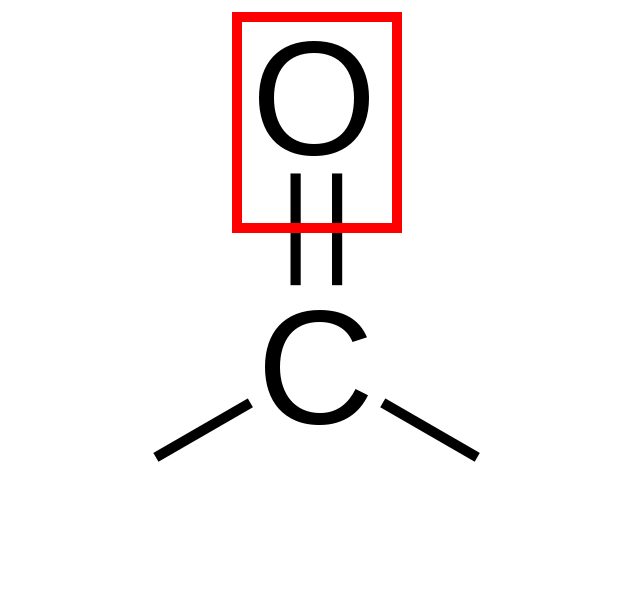

Oxovegyületek
Azok az oxigéntaratmú szerves vegyületeket, amelyekben az oxigénatom kétszeres kovalens kötéssel kapcsolódik a szénatomhoz, oxovegyületeknek nevezzük. (oxocsoport: =O)
oxocsoport
A karbonilcsoport olyan funkciós csoport, amelyben egy szénatom kettős kötéssel kapcsolódik egy oxigénatomhoz: C=O.

karbonilcsoport
Aldehidek
Aldehidek reakcióik
Néhány aldehid
Ketonok
Ketonok reakcióik
Ketonok előfordulásuk
Ketonok előállításuk
Ketonok felhasználásuk
Ajánlott további hasznos oldalak
Okostankönyv: Kémia 9-10. (A) II. kötet
Sulinet.hu – Oxovegyületek
Sulinet.hu – Oxovegyületek (feladatok)